Regression using parametric discriminative models in pmtk3
Many of the basic concepts of supervised learning, and their pmtk3 implementation, can be explained using linear regression as a model. We can handle non-linear relationships using basis function expansion, as we explain below. We will discuss categorical responses (classification) later.
Contents
- Fitting a linear regression model by maximum likelihood
- Bayesian parameter inference
- Frequentist parameter inference
- Prediction with linear regression
- Preprocessing and basis function expansion
- Overfitting, regularization and MAP estimation
- Cross validation approach to 'tuning' ridge regression
- Regularization paths
- Bayesian approach to 'tuning' ridge regression
- Empirical Bayes for ridge regression
- Variational Bayes for ridge regression
- Sparse linear regression
- L1 regularization
- Automatic relevancy determination (ARD)
Fitting a linear regression model by maximum likelihood
As a basic example, we can fit a linear regression model to a data set using maximum likelihood estimation as follows (extracted from linregBayesCaterpillar.m ):
clear all X = loadData('caterpillar'); % from http://www.ceremade.dauphine.fr/~xian/BCS/caterpillar y = log(X(:,11)); % log number of nests X = X(:,1:10); [model] = linregFit(X, y)
model =
lambda: 0
w: [11x1 double]
sigma2: 0.5852
preproc: [1x1 struct]
modelType: 'linreg'
likelihood: 'gaussian'
Let us check that this matches the usual equation for the MLE (adding a column of 1s to deal with the offset term)
X1 = [ones(size(X,1),1) X]; wOLS = X1\y; assert(approxeq(model.w, wOLS))
Bayesian parameter inference
If you fit by the model by MLE, you can examine the value of the estimated parameters by typing model.params, where params is the name of the parameter (here w or sigma2). But what if we want to know how much confidence we should have in these estimates? For this, we should use Bayesian inference. We can compute the posterior distribution of the parameters given the data and an uninformative prior as follows:
[modelB, logev, postSummary] = linregFitBayes(X, y, 'prior', 'uninf');
Here modelB is the model which contains the posterior of the parameters:
modelB
modelB =
preproc: [1x1 struct]
wN: [11x1 double]
VN: [11x11 double]
aN: 11
bN: 7.5649
modelType: 'linregBayes'
prior: 'uninf'
There is no longer a field called w or sigma2 since we are not using point estimation. Instead, modelB contains the parameters of the posterior, which has the following form
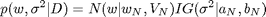
Since we used an uninformative prior, the posterior mean is the same as the MLE
assert(approxeq(wOLS, modelB.wN))
logev is the log evidence, or marginal likelihood, and is a measure of 'goodness of fit' of the overall model:
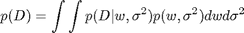
This can only be computed if we use a proper prior, not an uninformative prior. Hence in this case logev=[].
postSummary is a summary of the posterior. It contains the the posterior mean, standard deviation and 95% credible interval of each regression parameters. It also determines if each coefficient is significantly different from 0, based on whether its 95% CI excludes 0.
postSummary
postSummary =
what: [11x1 double]
stderr: [11x1 double]
credint: [11x2 double]
sig: [1 1 1 0 1 1 0 0 0 0 0]
We can print the posterior summary as a table using the command below. We put a little * next to the significant coefficients.
[modelB, logev, postSummary] = linregFitBayes(X, y, 'prior', 'uninf', ... 'displaySummary', true);
coeff mean stddev 95pc CI sig w0 10.998 3.06027 [ 4.652, 17.345] * w1 -0.004 0.00156 [ -0.008, -0.001] * w2 -0.054 0.02190 [ -0.099, -0.008] * w3 0.068 0.09947 [ -0.138, 0.274] w4 -1.294 0.56381 [ -2.463, -0.124] * w5 0.232 0.10438 [ 0.015, 0.448] * w6 -0.357 1.56646 [ -3.605, 2.892] w7 -0.237 1.00601 [ -2.324, 1.849] w8 0.181 0.23672 [ -0.310, 0.672] w9 -1.285 0.86485 [ -3.079, 0.508] w10 -0.433 0.73487 [ -1.957, 1.091]
We see that coefficients 0, 1, 2, 4, 5 are "significant" by this measure. (Other methods of testing significance, based on Bayes factors, can also be used, but are a bit more complicated to implement, and one cannot use uninformative priors when using Bayes factors.)
Note that pmtk currenlty has rather limited support for Bayesian model fitting, and not all Bayesian model fitting procedures currently implement this posterior summary feature.
Frequentist parameter inference
It turns out that in this particular example, the Bayesian analysis is identical to a classical frequentist analysis (because the posterior for linear regression under an uninformative Jeffreys prior is equivalent to the sampling distribution of the MLE). To see this, let us use the stats toolbox to fit the model and perform a frequentist analysis:
X1 = [ones(size(X,1),1), X]; [b, bint] = regress(y, X1); % b(j) is coefficient j, bint(j,:) = lower and upper 95% conf interval assert(approxeq(b, postSummary.what)) assert(approxeq(bint, postSummary.credint)) for i=1:length(b) fprintf('%8.3f, [%8.3f, %8.3f]\n', b(i), bint(i,1), bint(i,2)); end fprintf('\n');
10.998, [ 4.652, 17.345] -0.004, [ -0.008, -0.001] -0.054, [ -0.099, -0.008] 0.068, [ -0.138, 0.274] -1.294, [ -2.463, -0.124] 0.232, [ 0.015, 0.448] -0.357, [ -3.605, 2.892] -0.237, [ -2.324, 1.849] 0.181, [ -0.310, 0.672] -1.285, [ -3.079, 0.508] -0.433, [ -1.957, 1.091]
We see that the MLE is the same as the posterior mean, and the 95% frequentist confidence interval is the same as the 95% Bayesian credible interval.
In general, a Bayesian and frequentist analysis may not give the same results. In pmtk, all inference is Bayesian. However, pmtk supports some non-Bayesian estimation methods, such as cross validation, as we will see below.
Prediction with linear regression
In machine learning, we usually care more about prediction than in trying to interpret the fitted parameters (especially since many models of interest are hard to interpret or even strictly unidentifiable).
As an example, consider fitting a linear regression model to some 1d data using MLE and Bayesian methods (using linregPostPredLinearDemo.m ), and then plotting the predictions on a test set (which is just a grid of points in the interval [-7,7])
setSeed(1); [xtrain, ytrain, xtest] = polyDataMake('sampling', 'sparse', 'deg', 2); fitMethods = {@(x,y) linregFit(x,y), @(x,y) linregFitBayes(x,y)}; predictMethods = {@(x,y) linregPredict(x,y), @(x,y) linregPredictBayes(x,y)}; names = {'MLE', 'Bayes'}; for i=1:length(fitMethods) model = fitMethods{i}(xtrain, ytrain); [mu, v] = predictMethods{i}(model, xtest); figure; hold on plot(xtest, mu, 'k-', 'linewidth', 3, 'displayname', 'prediction'); plot(xtrain,ytrain,'ro','markersize', 14, 'linewidth', 3, ... 'displayname', 'training data'); NN = length(xtest); ndx = 1:5:NN; % plot subset of errorbars to reduce clutter sigma = sqrt(v); legend('location', 'northwest'); errorbar(xtest(ndx), mu(ndx), sigma(ndx)); title(names{i}); end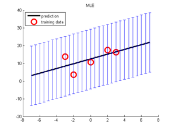 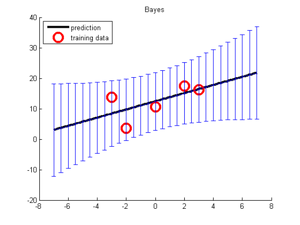
The predicted means (black lines) are the same, but in the plugin case, the predicted variance is constant, whereas in the Bayesian case, the predicted variance increases as we move further away from the training data, as it should, since our uncertainty increases as we extrapolate further.
Preprocessing and basis function expansion
We are free to preprocess the data in any way we choose before fitting the model. In pmtk, you can create a preprocessor (pp) 'object', and then pass it to the fitting function; the pp will be applied to the training data before fitting the model, and will be applied again to the test data. The advantage of this approach is that the pp is stored inside the model, which reduces the chance of applying inconsistent transformations to training and test data.
One common form of preprocessing is basis function expansion. This replaces the original features with a larger set, thus providing an easy way to fit nonlinear models. A simple example of this is polynomial expansion:
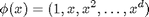
Below we give a simple example where we fit polynomials of increasing degree to 1d data. (We first scale the data before comouting a polynomial expansion, for reasons of numerical stability. As usual, we add a column of 1s to handle the offset term.) We then compute the mean squared error on the training and test sets (part of linregPolyVsDegree.m )
N = 21; [xtrain, ytrain, xtest, ytestNoisefree, ytest] = ... polyDataMake('sampling','thibaux', 'n', N); degs = 1:20; Nm = length(degs); % Plot error vs degree mseTrain = zeros(1,Nm); mseTest = zeros(1,Nm); for m=1:length(degs) deg = degs(m); pp = preprocessorCreate('rescaleX', true, 'poly', deg, 'addOnes', true); model = linregFit(xtrain, ytrain, 'preproc', pp); ypredTrain = linregPredict(model, xtrain); ypredTest = linregPredict(model, xtest); mseTrain(m) = mean((ytrain-ypredTrain).^2); mseTest(m) = mean((ytest-ypredTest).^2); end ndx = (degs<=16); figure; hold on plot(degs(ndx), mseTrain(ndx), 'bs:', 'linewidth', 2, 'markersize', 12); plot(degs(ndx), mseTest(ndx), 'rx-', 'linewidth', 2, 'markersize', 12); xlabel('degree') ylabel('mse') legend('train', 'test')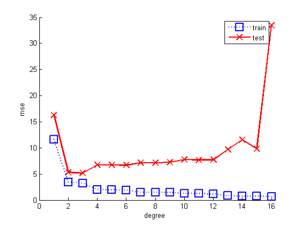
We see the characteristic U-shaped curve on the test set: on the left, the model is too simple (underfits) and on the right, the model is too complex (overfits). Below we plot some of the fitted functions for different degrees:
for deg = [2, 14, 20] pp = preprocessorCreate('rescaleX', true, 'poly', deg, 'addOnes', true); model = linregFit(xtrain, ytrain, 'preproc', pp); ypredTrain = linregPredict(model, xtrain); ypredTest = linregPredict(model, xtest); mseTrain(m) = mean((ytrain-ypredTrain).^2); mseTest(m) = mean((ytest-ypredTest).^2); figure; scatter(xtrain,ytrain,'b','filled'); hold on; plot(xtest, ypredTest, 'k', 'linewidth', 3); hold off title(sprintf('degree %d', deg)) set(gca,'ylim',[-10 15]); set(gca,'xlim',[-1 21]); end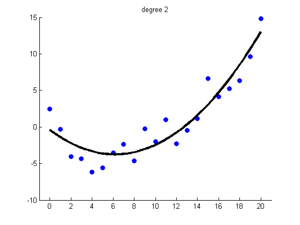 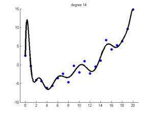 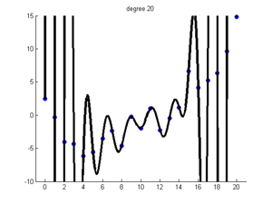
Overfitting, regularization and MAP estimation
Using maximum likelihood to train a model often results in overfitting. This means that the model fits the training set well, but is overly complex and consequently performs poorly on test data. We saw an example of that above, where fitting a high degree polynomial (with many parameters) to just N=21 data points results in a very 'wiggly' function that has poor performance on the test set.
Using Bayesian inference with an uninformative prior does not help. What we need is an informative prior, that encodes our preference for simpler models. A popular away to achieve this is to use a zero-mean spherical Gaussian prior of the form 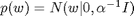, where 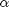 is the precision (strength) of the prior. This says that, a priori, we expect the regression weights to be small, which means we believe the function is simple/ smooth (not "too wiggly"). We can compute the posterior of 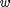 with this prior using a variety of different models/ likelihood functions. But a computationally simpler approach is to use MAP estimation (aka regularization), which just computes the posterior mode, which is given by
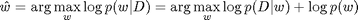
In the case of a Gaussian likelihood (linear regression) and Gaussian prior, we get

where 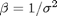 is the precision of the measurement noise. If we define 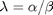 to be the amount of regularization, we can rewrite this as follows:
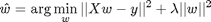
We see that this is a least squares problem with an L2 penalty on the weight vector --- this is known as ridge regression.
If 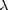 is too small, the model will overfit (since the function is too wiggly), but if it is too big, the model will underfit (since the function is too smooth). This is illustrated below, where we examine the mean squared error on the training and test sets as a function of for a fixed degree 14 polynomial. This illustrates the characteristic U-shape on the test set (part of linregPolyVsRegDemo.m ).
clear all setSeed(0); n=21; [xtrain, ytrain, xtest, ytestNoisefree, ytest, sigma2] =... polyDataMake('sampling','thibaux','n',n); % Preprocess all data deg = 14; ytrain = centerCols(ytrain); ytest = centerCols(ytest); pp = preprocessorCreate('poly', deg, 'rescaleX', true, 'standardizeX', false, 'addOnes', false); [pp, Xtrain] = preprocessorApplyToTrain(pp, xtrain); [Xtest] = preprocessorApplyToTest(pp, xtest); % No need for model to do any pre-processing. pp = preprocessorCreate( 'standardizeX', false, 'addOnes', false); lambdas = logspace(-10,1.3,10); NL = length(lambdas); printNdx = round(linspace(2, NL-1, 3)); testMse = zeros(1,NL); trainMse = zeros(1,NL); for k=1:NL lambda = lambdas(k); [model] = linregFit(Xtrain, ytrain, 'regtype', 'L2', 'lambda', lambda, 'preproc', pp); [ypredTest, s2] = linregPredict(model, Xtest); ypredTrain = linregPredict(model, Xtrain); testMse(k) = mean((ypredTest - ytest).^2); trainMse(k) = mean((ypredTrain - ytrain).^2); end hlam=figure; hold on ndx = log(lambdas); % 1:length(lambdas); plot(ndx, trainMse, 'bs:', 'linewidth', 2, 'markersize', 12); plot(ndx, testMse, 'rx-', 'linewidth', 2, 'markersize', 12); legend('train mse', 'test mse', 'location', 'northwest') xlabel('log lambda') title('mean squared error')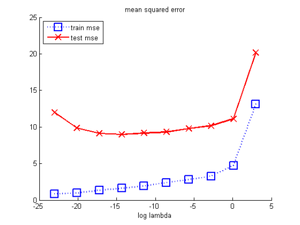
Below we print the fitted function for certain chosen lambdas
for k=printNdx lambda = lambdas(k); [model] = linregFit(Xtrain, ytrain, 'lambda', lambda, 'preproc', pp); [ypredTest, s2] = linregPredict(model, Xtest); ypredTrain = linregPredict(model, Xtrain); sig = sqrt(s2); figure; scatter(xtrain, ytrain,'b','filled'); hold on; plot(xtest, ypredTest, 'k', 'linewidth', 3); plot(xtest, ypredTest + sig, 'b:'); plot(xtest, ypredTest - sig, 'b:'); title(sprintf('ln lambda %5.3f', log(lambda))) end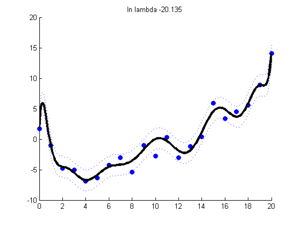 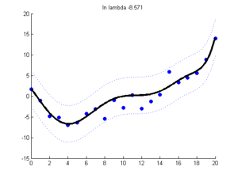 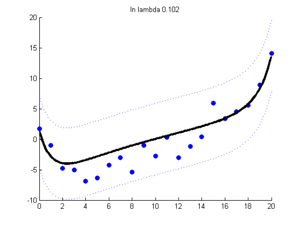
Cross validation approach to 'tuning' ridge regression
One simple way to choose regularization parameters is cross validation. Below we show how to estimate the expected loss for a ridge regression model as we vary the regularizer. We use the cvEstimate.m function, which can be used to estimate the frequentist risk of any estimation procedure (here each procedure corresponds to ridge regression with a different value of lambda) (based on linregPolyVsRegDemo.m )
for k=1:NL lambda = lambdas(k); fitFn = @(Xtr,ytr) linregFit(Xtr, ytr, 'lambda', lambda, 'preproc', pp); predFn = @(mod, Xte) linregPredict(mod, Xte); lossFn = @(yhat, yte) mean((yhat - yte).^2); N = size(Xtrain, 1); %nfolds = N; % LOOCV nfolds = 5; % since the data is sorted left to right, we must randomize the order [mu(k), se(k)] = cvEstimate(fitFn, predFn, lossFn, Xtrain, ytrain, nfolds, ... 'randomizeOrder',false); end
We can plot the results as shown below.
figure; hold on ndx = log(lambdas); % 1:length(lambdas); xlabel('log lambda') ylabel('mse') errorbar(ndx, mu, se, 'ko-','linewidth', 2, 'markersize', 12 ); title(sprintf('%d-fold cross validation, ntrain = %d', nfolds, N)) set(gca,'yscale','log') % draw vertical line at best value dof = 1./(eps+lambdas); idx_opt = argmin(mu); verticalLine(ndx(idx_opt), 'color','b', 'linewidth',2);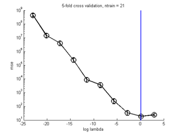
We see that it exhibits a U-shape similar to the test error. The vertical line denotes the best value.
Selecting a regularization parameter using CV is such a common operation that we have created a function called fitCv.m that makes it a bit easier. You just pass in a grid of parameters, and fitting, prediction and loss funcions, and it calls cvEstimate.m on each combination and picks the best. We give an example below.
fitFn2 = @(Xtr,ytr,lam) linregFit(Xtr, ytr, 'lambda', lam, 'preproc', pp); [model2, bestParam2, mu2, se2] = ... fitCv(lambdas, fitFn2, predFn, lossFn, Xtrain, ytrain, nfolds, ... 'randomizeOrder', false); assert(approxeq(mu, mu2))
Regularization paths
For some models and regularizers of strength , it is possible to efficiently compute MAP estimates for a whole set of values. This is known as the regularization path. In fact, computing the path can be faster than computing a single (lightly regularized) solution, since the estimate 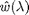 can be used to warm-start the optimizer when computing 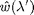 for 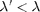.
The package glmnet supports the computation of regularization paths for linear and logistic regression using L2 and L1 regularization, using a coordinate descent method. It automatically computes a suitable range of values, depending on the data and type of regularizer. glmnet is included in pmtkSupport.
Of course, the regularization path is not a model, it is a set of models. But can use CV to pick the best. However, using fitCv.m to do this would be inefficient, since it loops over models, and then loops over folds internally (inside cvEstimate.m ): it is more efficient to loop over folds on the outside, and compute all the models at once on each fold in the inner loop.
The function linregFitPathCv.m does this in the case of linear regression with an L2 or L1 regularizer. Below we apply it to our running example and show that the estimated error has a similar profile to before.
[bestModel, path] = linregFitPathCv(Xtrain, ytrain, 'regtype', 'l2', 'preproc', pp,... 'nfolds', nfolds); figure; plot(path.cvErr, 'linewidth', 2)
Warning: In the directory "C:\kmurphy\GoogleCode\pmtkSupport\glmnet-matlab", glmnetMex.mexw32 now shadows glmnetMex.dll. Please see the MATLAB 7.1 Release Notes.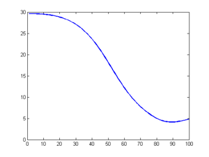
Bayesian approach to 'tuning' ridge regression
A Bayesian alternative to cross validation is to to compute the probability of each value of the regularizer, 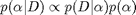. If we use a uniform prior for , we can focus on the 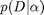 term, which is called the marginal likelihood or evidence. This quantity is given by
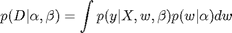
where, for simplicity, we assumed a known noise precision 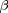. For linear regression with a Gaussian prior, we can compute this in closed form.
beta = 1/sigma2; alphas = beta * lambdas; for k=1:NL lambda = lambdas(k); [model, logev(k)] = linregFitBayes(Xtrain, ytrain, 'preproc', pp, ... 'prior', 'gauss', 'alpha', alphas(k), 'beta', beta); end
When we plot the log evidence vs alpha, it exhibits the same (inverted) U shape as the test error, as shown below (extracted from linregPolyVsRegDemo.m )
figLogev = figure; plot(log(alphas), logev, 'ko-', 'linewidth', 2, 'markersize', 12); xlabel('log alpha') title('log evidence')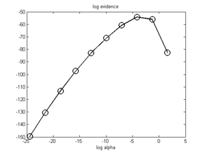
Empirical Bayes for ridge regression
One important practical benefit of the Bayesian approach is that we can use numerical optimization to pick the regularizer, using
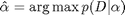
This is called empirical Bayes, ML-II estimation, or the 'evidence procedure'. By contrast, with CV we are restricted to performing a discrete search over a finite grid of values. This is not tractable when we have multiple regularization parameters to tune.
In pmtk3, we just specify that the prior is of type 'eb', which stands for empirical Bayes. This is illustrated below. The vertical line corresponds to the EB estimate.
[modelEB, logevEB] = linregFitBayes(Xtrain, ytrain, 'preproc', pp, 'prior', 'eb'); alphaEB = modelEB.netlab.alpha; figure(figLogev); verticalLine(log(alphaEB), 'linewidth', 3, 'color', 'r');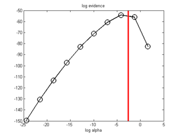
The EB code uses the netlab package, written by Ian Nabney. This is included in pmtkSupport.
Variational Bayes for ridge regression
An alternative to EB is to use variational Bayes to infer the posterior over and . This is illustrated below. The posterior mean value for is shown by the blue line. We see this is very similar to the EB estimate, since we used a vague prior for .
[modelVB, logevVB] = linregFitBayes(Xtrain, ytrain, 'preproc', pp, 'prior', 'vb'); alphaVB = modelVB.expectAlpha; figure(figLogev); verticalLine(log(alphaVB), 'linewidth', 3, 'color', 'b');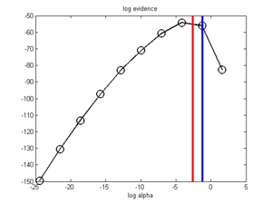
The VB code uses functions written by Jan Drugowitsch. This is included in pmtkSupport.
Sparse linear regression
There has been a lot of recent interest in models which only use a subset of the features/ variables. These are known as sparse models. pmtk supports several ways of promoting sparsity, and selecting relevant variables, some of which we discuss below.
L1 regularization
The best known way to encourage sparsity is to use L1 regularization. This is equivalent to MAP estimation under a Laplace prior. When combined with linear regression, this method is known as lasso. The overall objective is convex but nonsmooth, since the log prior is not differentiable at the origin.
There are many different optimization algorithms one can use; this is currently a hot topic of research. By default, we use Mark Schmidt's L1general package, which can be used for a variety of different models. However, we can also use the Stephen Boyd's interior point method, lsls.
As an example, consider the prostate cancer dataset used in the Hastie book. We can compute the regularization path using warm starting as follows (from lassoPathProstate.m )
clear all load prostateStnd lambdaMax = lambdaMaxLasso(X, y); NL = 30; lambdas = logspace(log10(lambdaMax), -2, NL); pp = preprocessorCreate(); D = size(X,2); winit = zeros(D,1); for i=1:NL lambda = lambdas(i); model = linregFit(X, y, 'lambda', lambda, 'regType', 'L1', ... 'preproc', pp, 'winit', winit); weightsLam(i,:) = rowvec(model.w); winit = model.w; end figure; plot(log(lambdas), weightsLam, 'o-', 'linewidth', 2); legend(names{1:end-1}, 'Location', 'NorthWest'); xlabel('log(lambda)');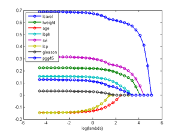
We can set fitFnName to 'l1ls' if desired; this gives the same results as above. Alternatively, we can use the path fitting algorithm from glmnet, and then use CV to pick the best model, as follows.
options = glmnetSet(); options.nlambda = NL; [bestModel, path] = linregFitPathCv(X, y, 'regtype', 'l1', 'preproc', pp,... 'options', options, 'nfolds', 5); ndxKeep = find(abs(bestModel.w) > 0) figure; lambdas2 = rowvec(path.lambdas); plot(path.w', '-o', 'LineWidth', 2); legend(names{1:size(X, 2)}, 'Location', 'NorthEast'); hold on bestNdx = find(bestModel.lambda==lambdas2); verticalLine(bestNdx, 'linewidth', 2, 'color', 'r');
Warning: In the directory "C:\kmurphy\GoogleCode\pmtkSupport\glmnet-matlab", glmnetMex.mexw32 now shadows glmnetMex.dll.
Please see the MATLAB 7.1 Release Notes.
ndxKeep =
1
2
3
6
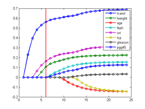 We see that the prediction optimal model contains features 1,2,3,6. Using CV to select lambda for lasso is not model selection consistent. Here we use it as a means of promoting sparsity for computational and statistical efficiency reasons, rather than as a method of detecting relevant variables.
Automatic relevancy determination (ARD)
An alternative way to promote sparsity is to use a diagonal Gaussian prior combined with empirical or variational Bayes. The posterior precisions will be driven to infinity for the irrelevant features. This feature is implemented in Drugowitch's VB code, and can be called from pmtk as follows.
[modelVB] = linregFitBayes(X, y, 'preproc', pp, 'prior', 'vb', 'useARD', true); alphaVB = modelVB.expectAlpha; ndxKeepVB = find(alphaVB < 0.5*max(alphaVB))
ndxKeepVB =
1
2
5
As is commonly the case, ARD picks a sparser model than L1. In this example, it only keeps features 1,2,5, although this obviously depends on the threshold used.
This page was auto-generated by calling pmtkPublish(C:\kmurphy\GoogleCode\pmtk3\docs\tutorial\tutRegr.m) on 08-Sep-2010 17:21:14